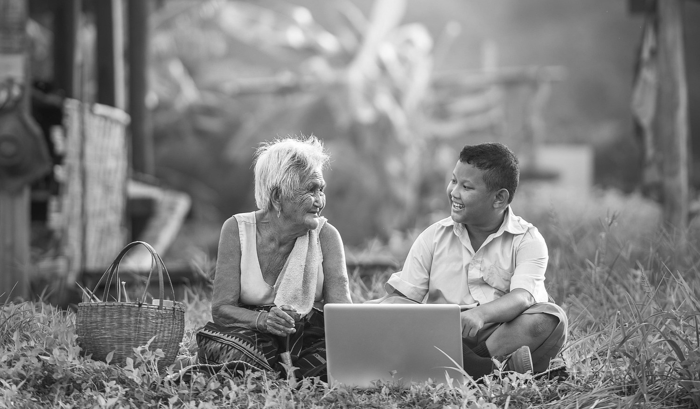

Digtal Divide
What is Digital Divide?
Digital Divide refers to the gap between people who can access digital
technologies, including the internet, versus those who cannot.
Digitally Illiterate
Most of these people are older adults or students from under-resourced communities, who face challenges due to low digital skills, limiting their ability to fully access essential online services.
Digitally Skilled
These individuals tend to have stronger digital literacy, often because of their young age, higher education, and more frequent exposure to technology, enabling them to navigate the digital world with confidence.
Limited Access
These people face challenges such as relying solely on basic smartphones with restricted
features. Their limited access hinders their
ability to
fully utilize digital tools, putting
them at a disadvantage.
Optimal Access
Individuals who enjoy seamless and comprehensive digital experiences.
that
empower them to effectively use technology for education, employment,
and healthcare
needs.

Disconnected
People who face significant barriers to affordable or any access to digital technologies include low-income families, rural residents, and elderly individuals."
Connected
Individuals who enjoy reliable, high-speed internet access and modern digital devices
like computers and smartphones, enabl ing seamless connectivity and opportunities."
Digital Divide in the Philippines
"Building Bridges Across Digital Gaps."
Technological Gaps in the Philippines
Despite having 83.8% internet penetration as of early 2025, roughly 16.2% of Filipinos, mostly in
geographically isolated and disadvantaged areas, remain offline due to infrastructure challenges and
high costs. While the country boasts near-universal
4G coverage and increasing 5G adoption,
broadband speeds and service quality still lag behind regional peers.
| Topic | Statistic / Fact | Year |
|---|---|---|
| Internet Penetration | 83.8% of the Philippine population uses the internet | 2025 |
| Number of Internet Users | 97.5 million Filipinos online | 2025 |
| Mobile Connections | 142 million cellular connections (122% penetration) | 2025 |
| Mobile Broadband Coverage | 98.2% broadband-capable mobile connections | 2025 |
| Digital Divide Gap | 16.2% remain offline, mainly in remote areas | 2025 |
| Internet Access at Home | 48.8% of households with internet access | 2024 |
| 4G Network Coverage | Approximately 95% coverage | 2025 |
| Broadband Speed Average | Still behind regional ASEAN peers | 2025 |
| Social Media Users | 90.8 million user identities | 2025 |
National Organizations
These are organizations that advocate for solutions to bridge the digital divide.

DICT
Leads numerous initiatives including digital literacy training, free public Wi-Fi, and the "Konektadong Pinoy Act" to lower internet costs and accelerate broadband rollout nationwide, especially targeting underserved and geographically isolated communities.
Digital Pinas
Collaborative with DICT and agencies like UNDP, ILO, and ITC to provide digital tools, skills
training, and establish transformation hubs for MSMEs
in remote areas..
DOST-ASTI
Advanced Science and Technology Institute (DOST-ASTI): Implements the REIINN project empowering
rural schools and communities with sustainable ICT infrastructure and digital learning platforms
for areas with limited internet access.
Philippine Institute for Development Studies
Conducts research and policy studies to provide data-driven pathways for universal broadband access and digital inclusion..
International Organizations
"Closing the gap, one connection at a time."
World Bank Group
Hosts the Global Digital Summit and expands the Accelerating Digitalization Global Challenge
Program aimed at helping
countries adopt digital solutions faster, strengthening digital
public infrastructure like digital IDs, digital payments,
and fostering innovation to
build
integrated digital markets.
International Conference on Information Technology and Digital Applications (ICITDA)
advocates for innovation in both image technology and digital applications with an emphasis on collaborative industrial and academic progress to drive digital equity and transformation.
DCO
Promotes multilateral cooperation and launches digital initiatives such as the GenAI Center of
Excellence, Online Content Integrity, and Data Embassy initiatives to drive inclusive and
sustainable growth of the global digital economy, with active involvement from member states
like Bangladesh, Qatar, and Greece.
United Nations
Calls for multilateral action to bridge the digital divide, emphasizing financial resources, technology transfer, and capacity building especially for least developed countries. Supports the development of a Global Digital Compact and High-Level Advisory Board on Artificial Intelligence to advance inclusive digital cooperation.